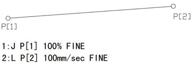

3.2 涂胶编程与操作
3.2.1直线运动和输入/输出条件等待指令
[任务描述]等待涂胶的玻璃通过传送带传送到升降工作台，工业机器人接收到涂胶控制信号开始涂胶。涂胶过程包含四条轨迹线的涂胶工作。在涂胶过程中要控制胶枪使之在喷涂过程中与喷涂表面保持正确的角度和恒定的距离。涂胶完成后工业机器人发出完成信号，升降工作台升起，通过传送带将玻璃传送到下一工位。在此任务中，要完成编写涂胶程序，目标点示教，程序校验，调试以及涂胶工作。
[知识准备]1、运动指令（直线指令L）
指令格式：L P[1] 100mm/sec FINE。
指令注释：机器人以100毫米每秒的速度采用直线运动方式移动至目标点P[1]。
程序说明如下：
L——直线运动指令。
P[1]——位置数据，指定运动位置的目标位置。
100mm/sec——进给速度，指定机器人运动的进给速度。由程序指令直接指定，单位可为mm/sec、cm/min、inch/min,最大值由参数限制。通过区别起点和终点时的姿态，来控制被驱动的工具的姿态。
图3-9 L直线运动示例
机器人机器人工具由P[1]点以100mm/sec的速度采用直线运动方式移动至P[2]点。
2、输入/输出条件等待指令WAIT (DI/DO)(比较符)（value）(操作)
指令格式：WAIT (DI/DO)(比较符)（value）(操作)
指令注释：输入/输出条件等待指令将输入/输出信号的值与另一个值进行比较，并等待直到满足比较条件为止。
程序说明如下：
WAIT——等待指令
DI/DO——输入/输出条件
Value(操作)——取常数（Constant）或是相应的操作
示例：
1: WAIT DI[i]=ON
2: WAIT DI[2] <> ON, TIMEOUT LBL[1]
3：WAIT DO[R[1]] = R[3]
数字输入输出条件比较指令WAIT。
图3-10 指令格式